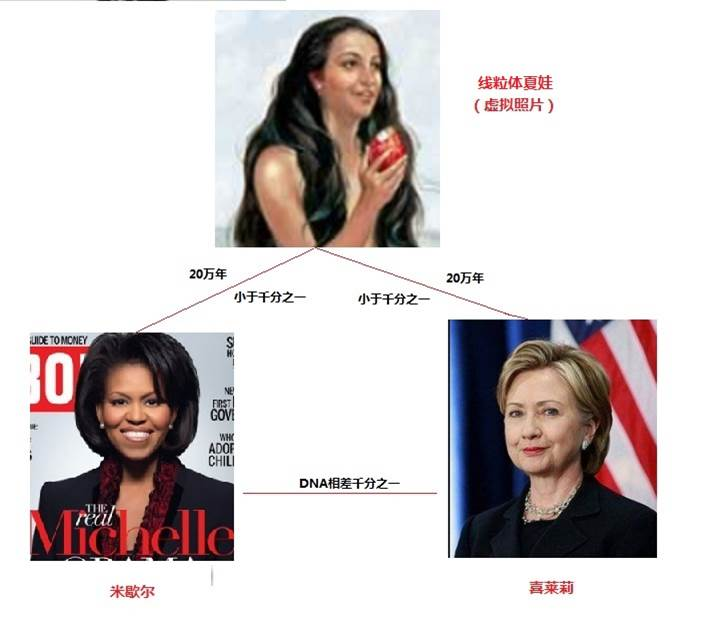
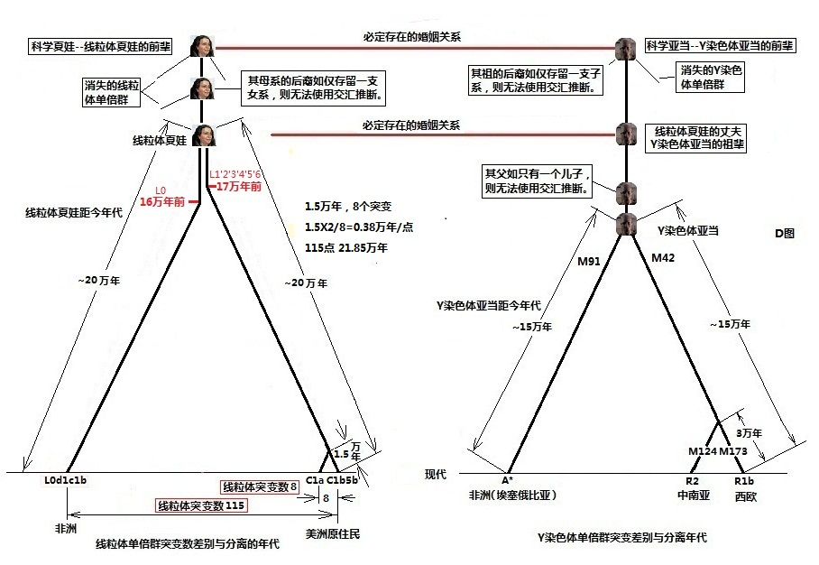

|
回主页
第3小节 谁是线粒体夏娃的夫君?
常有人发出质疑：Y染色体亚当和线粒体夏娃他们出生相差几万年，怎么可能是夫妻？他们的确不可能是夫妻。线粒体夏娃是Y染色体老、老…祖父的妻子，而Y染色体亚当娶的是线粒体夏娃以下多少代的女性孙辈。
一．母系“最近的共同祖先”―线粒体夏娃
1.我们母系祖先的生活年代：
（1）推算的依据：推算多少代前的母系前辈，都必须有3条依据：a.至少有两个繁衍到现在的人群；b.这两个人群线粒体DNA有突变的差异；c.有一个已知的“突变速率”。
从平面图形作图来看，必须有三个条件：a.两个基点，代表两个延续到现在的族群；b.两个基点有一定的距离，代表“线粒体DNA突变的差异”；c.有确定的向上延伸线的斜率，代表“突变速率”。由此三个条件，可以绘出两条相交的直线，其上面的交汇点，就代表着推算出的祖先。
（2）需要注意到，能被交汇出来的母系祖先，无论是最古老的还是中间的，必须至少有两个女儿，而且她们的后代必须一直繁衍到今天。因为我们是从现代人的血液中寻找，只有这样，才能确定两个基点。如果她只有一个女儿或者只有一个女儿的后代繁衍到现在，我们就不能从现代人的血液中推算出她的存在和她存在的时间了（参看上一页“线粒体谱系树”）。
2. 线粒体夏娃只是可以推算出的“最近的共同祖先”：
“最近的祖先”英文是the most recent
common ancestor (MRCA)。和线粒体夏娃同时存在的应该有其他的女性，只是其他女性的后裔没有留存到现在。而其他女性应该就是线粒体夏娃同一母系的姊妹，她们和线粒体夏娃有着极为相近的线粒体DNA序列。
显然，线粒体夏娃也应该有妈妈、外婆、曾外婆等等，否则，她是谁生出来的呢？为什么推算不出她们呢？因为她的姨妈们、姨外婆们、姨曾外婆们的女性后裔，没有延续到现在。没有满足“至少有两个女儿，而且她们的后代必须一直繁衍到今天”这个条件，就不可能被“推算”出来了。
另外，必须注意到，能成为我们母系祖先，都必须是具有23对染色体的女人，她们的染色体、线粒体DNA必须和我们基本一样。
二．DNA编码遗传差异减半定律
DNA编码是生命的核心，人类细胞中的DNA编码，是存储生命遗传信息的唯一载体。因此，“线粒体夏娃”的DNA编码与我们有多大的差异，她和我们的差异就有多大。这里包括她全部的生命遗传信息：物质的和非物质的遗传信息（本网导读1：DNA编码是人类遗传信息的唯一载体）。
1.小于DNA千分之一的差别：

图2-13 线粒体夏娃和我们的差别
2006年美国国立人类基因组研究所（National
Human Genome Research Institute-NHGRI）发布的报告说：“在2003年4月，当研究人员完成了人类基因组计划的最后分析，他们确认，人类基因组的三十亿个碱基对的遗传字母，在每个人身上都是99.9％的相同。这也意味着在这个星球上的个人的DNA差异，平均只有0.1％（千分之一）。”。
2. DNA编码遗传差异减半―线粒体夏娃比米歇尔更像喜莱莉：
作为线粒体夏娃的后代，她们与线粒体夏娃又有多大的差异呢？
因为在DNA复制过程中，有准确复制和修正复制错误的功能，大约每复制10亿对DNA编码对才出错一对的准确率。因此，人类下一代和上一代之间的DNA突变数目是很少的。如果一位母亲，在20岁左右生了两个女儿，假定大女儿身上有100个不同于母亲的DNA编码突变，二女儿也有100个突变。由于人类细胞核包含多达60亿的DNA编码，两个女儿的随机突变点，不可能在相同位置上。就如将100个小球，随机地撒向60亿个球洞，当这么多球洞都有均等的进球机会时，两次抛撒的100个球，进入同一个球洞的机会微乎其微。因此，女儿之间的差别，是200个突变点，而她们和母亲的差别，必然仅仅是100个突变点。当每个女儿又都有两个女儿，她们同样各发生了新的100个突变点后，3代人的DNA编码差异又是怎样的呢？情况并不复杂。4个外孙女中，亲姐妹的差异是200个点；表姐妹之间的差异是400个点；她们与外祖母之间的差异是200个点。

图2-14 DNA编码遗传差异减半定律
推而广之，结论是：无论多少代的遗传，现存支系人群的公共老祖母（或老祖父）与他们现代子孙的DNA编码的差异，是支系人群之间的DNA编码最大差异的一半。这种差异的规律，已经被许多分子人类学的学者们所肯定，因此，我们可以将此规律确定为：“DNA编码遗传差异减半定律”。
按照上述定律，米歇尔和喜莱莉的差异是由两条承传母线发展积累而来，这个积累的DNA差异大约是千分之一，那么，每条母线上的差异就应该是千分之一的一半。也就是说，她们分别与线粒体夏娃的DNA差异，仅仅是千分之0.5。
人类细胞中的DNA编码，是“存储生命遗传信息的唯一载体”，已经成为生命科学的共识。人类学习听说读写的能力、喜怒哀乐的情感，这些“非物质的遗传信息”，也必然是承载于DNA编码之上，代代相传。从这里可以看到，米歇尔或者喜莱莉，她们与线粒体夏娃的“非物质的遗传信息”的差异，也应该仅仅是千分之0.5。
因此，从DNA上来看，线粒体夏娃比米歇尔更像喜莱莉，或者说她比喜莱莉更像米歇尔。也许，由于营养没有米歇尔和喜莱莉那样好，她要瘦一些。这样，我们就可以设想出线粒体夏娃的形象了：她的样子应该介于米歇尔和喜莱莉的样子之间，因为她住在非洲，阳光比较充足，肤色可能略偏于米歇尔。同时，她一定和她们同样的美丽、同样的聪明，所欠缺的只是没有像她们那样，分享了人类多年来积累的科学知识。简而言之，她就是一个和你、我相同的人。事实上，她就像一位住在深山里的小姑娘，只要给她机会，她―“线粒体夏娃”，同样会成为普林斯顿或者耶鲁大学的优秀毕业生。这些是否十分出于您的意料之外
呢？从这里我们也可以看到，人类没有发生进化，连微进化也没有发生。
二．谁是线粒体夏娃的夫君？
1.Y染色体亚当的生活年代：
关于Y染色体亚当是如何推算出来的，在原理上，Y染色体DNA年代推算是和线粒体DNA年代推算一致的：“看两个分开年代已知的群体各自积累了多少突变”。简单地说，这仍然是平面上的两点出发、具有一定斜率的两条直线交汇的简单几何问题。只是Y染色体由五千多万DNA碱基对组成，远远多于仅1万6千多对DNA碱基的线粒体，因此，Y染色体亚当生活年代的推算就比线粒体夏娃要困难的多。
由于采用的突变率和依据资料的不同，在不同的研究报告中，提出不同的年代。下面列出4个Y染色体亚当产生年代和报告名称：（年代，研究报告发表时间，论文名称）
（1）27万年前，1995,
“Absence of polymorphism at the ZFY locus on the
human Y chromosome.”；
（2）5.9万年前(95%的可能在4万年到14万年间)，2000, “Y chromosome sequence variation and the history of human
populations”；
（3）14万年前，2011，“A Revised Root for the Human Y Chromosomal
Phylogenetic Tree: The Origin of Patrilineal Diversity in Africa”；
（4）16万年前，2012，Re-Examining the "Out of Africa" Theory and
the Origin of Europeoids (Caucasoids)
in Light of DNA Genealogy.
经常被人们提到的是Y染色体亚当产生于5.9万年前，其实是不准确的。从最新的研究来看，Y染色体亚当产生时间，似应确定为15万年前左右。

图2-15 线粒体夏娃的夫君是Y染色体亚当的祖辈
2.谁是线粒体夏娃的夫君？
Y染色体亚当是全世界人共同的老老祖父，他生活在15万年前，线粒体夏娃是全世界人共同的老老老祖母，她生活在20万年前，这看似十分荒唐，其实这是一个十分正确的结论。请注意，在这个表述上，有意在线粒体夏娃上，我多用了一个“老”字，来表明他们并不是一代人。

图2-16 由后裔的DNA遗传交汇可能产生的错辈现象
让我们来看一个简单家谱图。在这个四代的家谱上，有一对曾祖辈的夫妻，他们的第四代有3个女孩，4个男孩。虽然女孩和男孩有着共同的曾祖母和曾祖父，利用前面所说的推断原则，从女孩的线粒体DNA，可以推断出曾祖母。然而，从男孩的Y染色体DNA却只可以推断到他们的祖父，祖父当然不是曾祖母的配偶。这并不影响到这4个儿子有一位共同的祖父，这3个女儿有一位共同的曾祖母。
由此例子来看，线粒体夏娃和Y染色体亚当的关系就一目了然了：线粒体夏娃的丈夫是Y染色体亚当5万年前的父辈。
三. 米歇尔和喜莱莉有进化的差别吗？
1. 种族只是一个社会的概念，而不是一个科学事实：
有人问美国著名的基因组研究首席专家文特尔（Dr. John Craig Venter）：不同肤色的人种在基因方面到底有什么不同？他的回答是：“几乎没有什么不同”，无论是黑种人、白种人、西班牙裔人、亚洲人，“我们全都分
享着百分之99.99相同的遗传密码，并不存在我们的种族区别”，“种族只是一个社会的概念，而不是一个科学事实。”
这些给了我们一个重大的思考转变：以前我们是从表皮、骨骼和化石的比较，来认识人类的起源、种族、以及种族的差异，并得出了人类是进化来的结论。同时认为，由于进化产生了差别，形成了不同优、劣的种族。然而，从DNA的解码来看，完全把这些理论都推翻了。
2. 进化论下的种族观念：
达尔文在“人类的由来”一书中说：
“通过仔细的测量，证明欧罗巴人的平均脑量是92.3立方英寸，亚美利加人的是87.5，亚细亚人的是87.1，而澳大利亚人的才81.9立方英寸”（达尔文“人类的由来”中文版 第72至73页）”。
显然，他认为从头骨容量上看，人是有优劣之分的。他还说：
“在某个不很遥远的未来的时期里，大概 用不了几百年，各个文明的族类几乎可以肯定地会把全世界野蛮人的族类消灭干净而取代他们的地位。”，“因为这差距的一端将是更加文明的一种人，甚至，我们可以希望，比今天的高加索人（白人）更要文明，而另一端将是低的像狒狒一类的猿猴，而不是现在那样的一端是黑人或澳大利亚土著居民，而另一端是大猩猩。”
（同书，第六章，中文版 第244页）。
这正是从进化论带来的“适者生存”原则，预言劣等民族
会被逐渐淘汰。但是，过了一百多年，南非的黑人曼德拉成为了总统，南非政权不再只是白人的统治。原来落后的中华民族，经济已经飞速崛起，而“高端的”高加索人（白人）也没有变得更加文明。这些事实，显然证明了达尔文的预言完全是错误的。
3. 米歇尔和喜莱莉没有进化的差别
现在，以DNA解码为依据的分子人类学，给了我们一个全新的探索途径，更给我们带来了 一个全新的思维和视野境界。人没有进化，人没有“科学事实”上的差别，没有种族的优劣。而正像美国独立宣言说得那样，“人被平等的创造”。一切由达尔文进化理论发展出来的关于人的结论，都
只是一些误解或谎言。
奥巴马总统的夫人米歇尔和克林顿总统的夫人喜莱莉有不同的肤色，他们的DNA差别仅仅只有千分之一、甚至是万分之一。如果将人类的历史以千年来度量，米歇尔可以说是非洲人，喜莱莉是祖先几万年前走出非洲的欧洲人。她们同样的聪明、同样的优秀，也都很美丽。虽然我们不知道她们分属的线粒体DNA单倍群和她们祖先的历史，但是，可以肯定的是她们没有达尔文进化论所定义的进化差别，她们血液中的DNA是99.9%的相同，差异仅仅只有千分之一（甚至万分之一）。肤色的差异，仅仅是面对阳光强度适应性的变化，和达尔文的进化理论毫不相干。
如果有进化，那么，她们是在两条不同的遗传线上“进化”的，必然有进化的差别。她们有进化的差别吗？如果有，哪一位更进化一些呢？有人说：“米歇尔是进化的特例”，这是非常可笑的说法。在非洲，一定有许多人，他们和米歇尔有着近代的共同祖先。他们和优秀的米歇尔仅仅才分离了200年左右，而和喜莱莉分离可能有十多万年了。我们可以肯定的说，并不会因为移民到美洲后200年中，发生了特别的进化，因此，那些仍在非洲生活的人，也都会是同样的优秀。
总之，从DNA解码所看到的是：自20万年前的线粒体夏娃出现在非洲以来，甚至更早的时候，直到现在的我们，人类没有进化，连微进化都没有。我们甚至可以推论，20万年以后我们的子孙，也不会与我们有大的差别。他们和我们的DNA的差异，也必定小于千分之一。
四．为什么现代人的DNA差别那么小
1. DNA复制的精确令人赞叹:
经过20万年分离后，各族群都经历上万代的遗传，每代人细胞又经历了几十代的细胞分裂，由一对父母增加到现在的70亿人。DNA序列经历了多少万亿次的复制，DNA序列的差异却仅仅只有千分之一，DNA复制的精确度真令人赞叹。为什么人类的DNA序列差异会这么小呢？这就归功于DNA精确地复制和自我矫正、修复的功能。
在细胞分裂时，DNA会非常准确地自我复制，将DNA序列原原本本地传送到下一代的细胞中去。保证这样准确地自我复制的机理是一种“半保留复制”过程。

图2-17 DNA的半保留复制
人类每一条染色体包含着一条长长的DNA双螺旋结构链，两条链各包含一串碱基，这些碱基是严格互补配对的。配对的规律是：A与T配；G与C配。如果左边是T，右边一定是A，不可能是G或C，也不可能是T，很像是一条拉链。“半保留复制”时，其过程犹如是将一条拉链先拉开，再给左边的那半条旧拉链配一个新的半条拉链，这半条拉链一定要和原有的“右半拉链”完全一致，才能吻合。同样，给右边的那半条旧拉链配一个新的半条拉链，这半条新拉链一定要和原有的“左半拉链”完全一致，也才能吻合。这样，就复制出两条完整的拉链，它们与其母拉链完全相同。
DNA半保留复制就是这样的复制机理，使人体的细胞不论分裂复制多少次，其中的染色体和线粒体的DNA序列，都能一代代精确地传递下去。DNA复制过程中，复制速度可高达每秒复制100对DNA编码，并能达到每复制10亿对DNA编码对才出错一对的准确率。（“Incredibly,
DNA synthesis can occur as fast as 100 nucleotides/second and must be as accurate as 1 wrong base in 109
nucleotide additions. . . . .”（Morgan,
David. The Cell Cycle: Principles of Cell Control. New Science Press Ltd.,
London, 2007; pp 58-60）。
如此高速又如此的准确率实在令人称奇！
2. 奇妙的DNA修复功能
（查看：李海英，等 著，现代分子生物学与基因工程，普通高等教育“十一五”规划教材，化学工业出版社出版）
DNA的复制虽然是一个高保真度的过程，但复制形成的子代DNA，总不免还存在少量未被校正的差错。为了避免引起大量的突变，导至机体的死亡，DNA序列在严格复制的同时，还有特别的修复功能。DNA是一种不同于其它材料的特殊分子，它能够在受到损伤或发生错误的复制后，进行自我修复。DNA的修复功能，是其进行高速稳定地复制过程的又一个保证，包含以下几种修复方式：
（1）错配修复（mismatch
repair）：在含有错配碱基的DNA分子中，使正常核苷酸序列恢复的修复方式，主要用来纠正DNA双螺旋上错配的碱基对，它能使复制的保真性提高100至1000倍。
（2）切除修复(excision repair):这是一种为普遍的无差错的修复机制，可以在一系列的DNA损伤中起修复作用。
（3）重组修复(recombination repair):对损伤部位先复制,再通过DNA复制过程中两条DNA链的重组交换而完成DNA的修复，使产生遗传信息的缺损的子代DNA分子通过遗传重组加以弥补。
（4）易错修复(error-prone repair): 在DNA损伤时，缺乏校对功能的DNA聚合酶常在受损部位进行DNA复制，以避免细胞死亡，这是一种会导致较高的差错率的修复方式。
由于有了这些修复的方式，使得本来就十分精确的DNA序列复制方式就更加精确了。然而，在复制过程中，仍然会产生微小的“差错”。这个“差错”，就是“突变”，它能被下一代传承。正因为这样，在现代人类已经生存的20几万年、上万代的承传中，产生的差异仅仅只有千分之一左右就得到了解释。更奇妙的是在这千分之一的差异中，包含了由突变在Y染色体和线粒体DNA中产生的标记。正因为有了这些标记，才能使我们追踪到我们的祖先，同时也描绘出人类迁徙的路线和历史，从这个角度来看，这些“差错”已经不是“差错”了。
例如：M168标记经过几千代的繁衍后，一个字符‘T’居然能在5千多万序列上的同一个位置上，屹立不变的保留下来，这令人赞叹的承传，就是依靠着上述DNA精确的复制。
正如前面所说：有“复制10亿对碱基对才出错一个碱基的准确率”，这样，每一次细胞中的60亿对碱基（30亿对碱基来自父亲、30亿对碱基来自母亲），复制的误差约6个字符。如果每一代人累计300个“差错”（突变）。自线粒体夏娃至今，经历了20万年，大约1万代的承传，应该累积了300万个“差错”（突变），只占人类细胞中60亿DNA碱基的“300万÷60亿”，刚好是千分之0.5。这正是米歇尔和线粒体夏娃的区别的一半。可以预见，再过20万年后，也只会再增加刚好是千分之0.5的差别。
五．人类不存在任何微进化
人类为什么没有任何微进化?
在前面，我们已经看到，20万年前的线粒体夏娃的DNA和现代人的DNA相差仅仅是千分之0.5，比不同地区人们之间的DNA差异还要小。这就已经确定了，20多万年来，人类没有发生任何微进化。
我们再来看一下2000年8月22日，在纽约时报科学版上的一篇报道―“有种族的区别吗？基因显示这不是真的”（Do Races Differ? Not Really, Genes Show），报道说：
“文特尔博士和美国国立卫生研究院的科学家最近宣布，他们已经把整个人类基因组序列草图放在一起，研究人员一致宣布：仅仅只有一个种族 - 人类。
文特尔博士和其他研究人员说：某些特质最常用于区分一个种族之间的差别，如皮肤和眼睛的颜色，或鼻子的宽度。但是，这些仅仅是由少数基因控制的性状，在现代人短短的历史过程中，这些能够迅速地改变去应对极端环境的压力。”
文特尔博士是领导世界基因组研究工作的首席专家之一，也是从事基因组实际研究工作最多的专家。世界基因组最早研究的5个人的样本，其中一个就是文特尔博士的。
总之，自Y染色体亚当和线粒体夏娃以来，人类没有发生微进化。
|